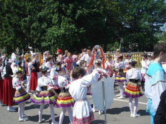
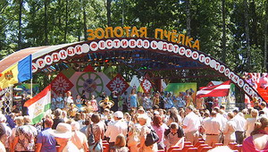

|
XI
Международный фестиваль детского творчества
«Золотая пчёлка».
XI
Международный фестиваль детского творчества
«Золотая пчёлка» начался в областном центре.
В
Могилёве 25 мая зарубежным делегациям
организовали обзорную экскурсию по Могилёву, которая включала в себя
посещение Советской площади, ратуши, площади Звёзд, улицы Ленинской,
Свято-Никольского монастыря, Буйничского поля, зоосада. Затем
творческий подарок участникам фестиваля преподнёс заслуженный
любительский коллектив Беларуси театр-студия
«Радуга».
В четверг утром участники фестиваля отправились в
г. Климовичи, часть из них — в дизель–поезде.
Маршрут
этот был специальным и носил название «Поезд
дружбы». Время в пути пролетело быстро, ибо в вагонах звучали
песни, шутки, загадки, звонкий детский смех, разноязычная речь
– русская, украинская, литовская, киргизская,
китайская…
В поезде с зарубежными участниками фестиваля работали две команды
учащихся Могилёвского государственного колледжа искусств. Ещё народный
ансамбль «Вясёлка» знакомил участников фестиваля с
белорусскими песнями.
На
железнодорожном вокзале г. Климовичи была организована торжественная
встреча гостей фестиваля. Представителям каждой страны были
преподнесены душистые караваи. В этот-же день в наш город приехали и
участники фестиваля со всех уголков Беларуси.
Вечером в городском парке состоялось развлекательное шоу с участием
лучших диско-клубов Могилёвщины,
а так-же и праздничное открытие фестиваля.
В дни фестиваля ребята могли поучаствовать в различных конкурсах:
команд брейк-данса, рисунков на мольберте и асфальте.
Впервые на фестивале состоялся детский праздник «Беларускi
кiрмаш»:
фольклорные подворья на нём представила детвора из регионов Могилевщины.
Здесь работали народные обрядовые площадки, экспонировались изделия
декоративно-прикладного искусства.
Кстати, приобрести памятные подарки для себя и
своих родных участники
фестиваля смогли на многочисленных выставках-продажах. Изделия из
дерева, соломки, керамики, оригинальные куклы в национальных костюмах,
всевозможные украшения, декоративные панно ещё долго будут напоминать о
замечательном празднике детства под названием «Золотая
пчёлка»
Юных климовчан и гостей нашего города
массовики-затейники увлекали
сюжетно-игровыми программами, а работники спортивных учреждений
приглашали на спортплощадки. Белорусское Общество Охотников и
Рыболовов же организовало для любителей рыбной
ловли «мини-бассейн», где карасей и карпов нужно
было ловить… руками.
Любители собак могли посетить большую выставку четвероногих друзей.
СООО «Мобильные ТелеСистемы», крупнейший оператор
сотовой связи в Беларуси, в шестой раз выступило официальным партнёром
XI Международного фестиваля детского творчества «Золотая
пчёлка». 28 мая состоялся концерт, организованный
компанией МТС, в нём приняли участие известные белорусские
исполнительницы Нина Богданова и Лариса Грибалёва. А завершилось
всё праздничным салютом в честь детского творчества.
В воскресенье, 29 мая, состоялось праздничное шествие участников и
гостей фестиваля. Не передать
словами, какой красивой была городская площадь, когда на ней под звуки
духового оркестра
сошлись все делегации в ярких нарядах, с флагами и флажками, а затем
закружились в едином хороводе сотни счастливых детей.
Дальнейшие действа праздника проходили в амфитеатре. Когда зрители
заняли свои места, началась церемония награждения участников
фестиваля.
В жюри фестиваля, как всегда, вошли представители разных государств.
Возглавлял его народный артист Беларуси, лауреат Государственной премии
Республики Беларусь композитор Леонид Захлевный.
Дипломами третьей степени отмечено 26 конкурсантов, второй степени
— 20.

Звания победителей на ХІ Международном фестивале
детского творчества
«Золотая пчёлка» удостоены с вручением Диплома
первой степени и подарков следующие юные таланты: Афзалшох Сафарзода
(г. Душанбе, Таджикистан), Соломия Жекало (г. Калуш, Украина), Ольга
Пересунько (г. Белая Церковь, Украина), ансамбль народной песни
«Скарбница» (г. Харьков, Украина), народный
ансамбль танца «Барвинок» (г. Луганск, Украина),
Антон Завалей (г. Мозырь), Валерия Шепелевич, Алина Мощенко и Валерия
Грибусова (г. Могилев), Артем Голубев (г. Горки), образцовый вокальный
ансамбль «Песенка» (г. Минск), Небис Беатрис (г.
Таллин, Эстония), Борис Власов и образцовый ансамбль танца
«Балалаечка» (г. Санкт-Петербург, Российская
Федерация), поп-группа «Морские камушки»
(г.Вентспилс, Латвия), танцевальный коллектив
«Каранфил» (с. Бешалма, Молдова).
Все Гран-при XI Международного фестиваля детского творчества
«Золотая пчёлка» завоевали белорусы!
Более того, в четырёх из пяти номинаций конкурсов победили
представители Могилёвской области.
Учащаяся Буйничской детской школы искусств (ДШИ) Могилёвского района
Полина Бадеева признана лучшей солисткой-вокалисткой;
высокий
уровень артистизма и исполнительского мастерства показал вокальный
ансамбль мальчиков из Могилевской ДШИ №3 имени М. Солдатова;
не
было равных среди ровесников юному художнику из Хотимска Дмитрию
Хучеву, а в номинации декоративно-прикладного искусства лидировала
Виктория Волынцева из Горецкого района.
Пятый диплом высшей пробы увез в Минск ансамбль танца
«Ровесник» Республиканского дворца культуры
профсоюзов.
Специальным дипломом за сохранение традиций народного танцевального
искусства награжден хореографический ансамбль из Румынии.
На этой «Золотой пчёлке» конкурсантам из
Климовичской детской школы искусств достались Диплом второй степени и
поощрительный диплом: первый получила вокалистка Алина Кошелева, второй
— образцовый хореографический коллектив
«Живица».
Дмитрию Рыжикову вручена денежная премия
Климовичского райисполкома.

Во время вручения наград и выступлений лауреатов было интересно
наблюдать за зрителями. Их мнения, которые выражались громом
аплодисментов, тоже совпадали с решением жюри.
По единодушному мнению зрителей и участников на фестивале удалось
создать очень теплую, доброжелательную атмосферу. А отличительной
чертой одиннадцатого по счету праздника юных талантов стало то, что на
основной и импровизированных сценах «Золотой
пчёлки», а также на
выставочных подворьях удалось продемонстрировать богатейшие
национальные традиции белорусского народа, его трудолюбие и стремление
к прекрасному.
Для маленького города «Золотая пчёлка» - большое
событие,
поскольку на праздник приехало вдвое больше людей, чем проживает в
самих Климовичах. Это, в свою очередь, говорит о том,
что у людей
большое желание поприсутствовать на фестивале и прикоснуться к
творчеству.
«Золотая пчёлка-2011» отзвенела звонкими детскими
голосами и улетела. Но обещала вернуться.
При
подготовке данной статьи использовались фотоматериалы сайта Образцового
ансамбля танца «АЛЬЯНС» г. Бендеры, Приднестровье,
Молдова
|